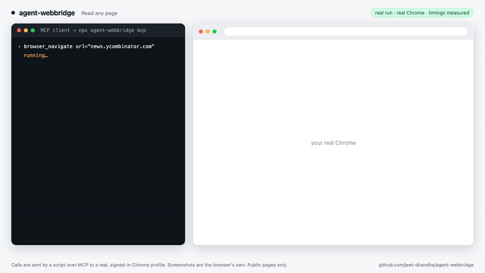
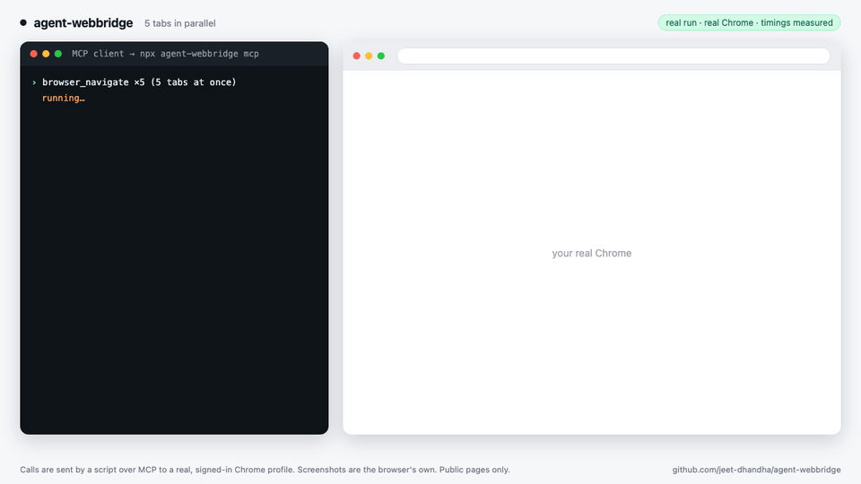
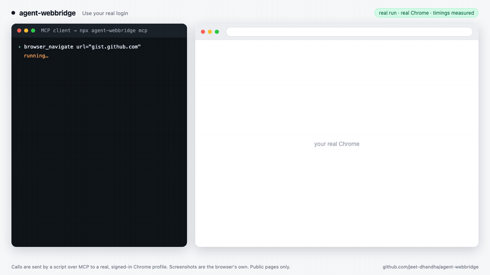
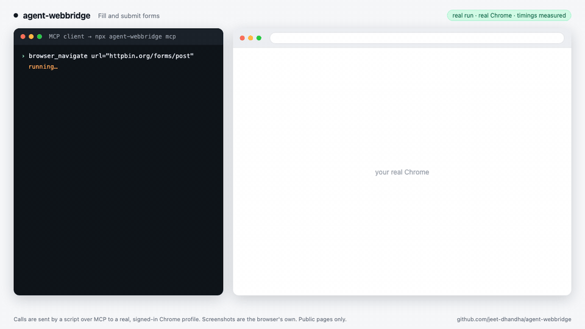
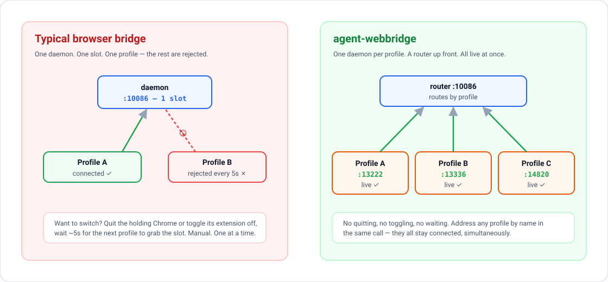

WebBridge (also known as Agent WebBridge, Open WebBridge, or agent-webbridge) is an open-source (MIT), clean-room browser automation platform and Model Context Protocol (MCP) server that lets AI assistants (like Claude Code, Cursor, Windsurf) operate your real Google Chrome browser — with your existing logins and profiles — via the Chrome DevTools Protocol. Drives multiple profiles at once with true per-tab parallelism, community recipes (awb-recipes), and zero cloud dependencies (100% local on 127.0.0.1).
Active Google Chrome profile instances and live daemon statuses.
| Profile ID | Browser Target | Connection Status | Avg Latency |
|---|---|---|---|
| "Work" | Google Workspace Account | Connected | 42ms |
| "Personal" | Personal Google Account | Connected | 36ms |
| "Developer" | Admin Console Profile | Connected | 51ms |
npx agent-webbridge mcp, which drives a real, signed-in Chrome profile. Timings are measured live on a MacBook on broadband. Public pages only; nothing is submitted to any account.

@e element references in <600ms, bypassing headless bot detection entirely.

chrome.debugger per tab (a Map keyed by tabId), finishing in 3.5s in parallel versus 9.3s serially.


contenteditable rich text editors via CDP input events.
Websites frequently shift dynamic classes, change DOM layouts, or deploy anti-scraping traps. Rather than forcing your AI agent to guess selectors or break on site updates, awb-recipes provides community-maintained, verified playbooks (recipe.json) detailing exact actions, selector fallbacks, and caveats for each service.
good first recipe, run its steps on your account, verify or fix the selectors, and open a PR!
io.github.jeet-dhandha/agent-webbridge as a zero-dependency stdio server for Claude, Cursor, and Windsurf.
npx skills add jeet-dhandha/agent-webbridge.
awb setup, with Load-unpacked supported for local hacking.
ws) and built-in cross-platform support for macOS, Windows, and Linux.
Add the bridge to Claude Code in a single command:
Or add as an agent skill: npx skills add jeet-dhandha/agent-webbridge
Add to your claude_desktop_config.json or Cursor MCP settings:
Assemble a command body for the router to forward.
Press "Transmit Command to Fleet" to simulate the network routing...

10086. It accepts standard HTTP / MCP commands, extracts the "profile" parameter, and forwards the payload transparently to the corresponding daemon.
agent-webbridge is an open-source (MIT) browser automation engine and Model Context Protocol (MCP) server. It allows AI agents like Claude Code, Cursor, and Windsurf to drive your real Google Chrome — with your real login sessions — across multiple profiles simultaneously, with true per-tab parallel execution.
agent-webbridge attaches the Chrome DevTools Protocol per tab (a Map keyed by tabId). 2, 5, and 10 tabs in a single profile evaluate concurrently in parallel: 5 tabs finish in ~3.5s flat versus 9.3s serially.
npm i -g agent-webbridge && awb setup "Work" once to install the extension and daemon. Then run claude mcp add chrome -- npx -y agent-webbridge mcp in Claude Code, or add the stdio command to your Cursor / Claude Desktop configuration file.
agent-webbridge runs a separate daemon for each profile behind a central router, commands directed at Gmail, Search Console, Ads, or Google Drive for different logins execute side-by-side without logging out.
agent-webbridge is published in the Official Model Context Protocol Registry (io.github.jeet-dhandha/agent-webbridge), featured on punkpeye/awesome-mcp-servers, listed in curated Awesome Claude Skills collections, installable via the Skills CLI (npx skills add jeet-dhandha/agent-webbridge), and published on npm and the Chrome Web Store.
127.0.0.1 only. Starting in version 1.3.1, the router and daemons enforce strict Host and Origin validation, refusing any request carrying a web Origin or a non-loopback Host header. Websites you visit cannot drive the bridge.